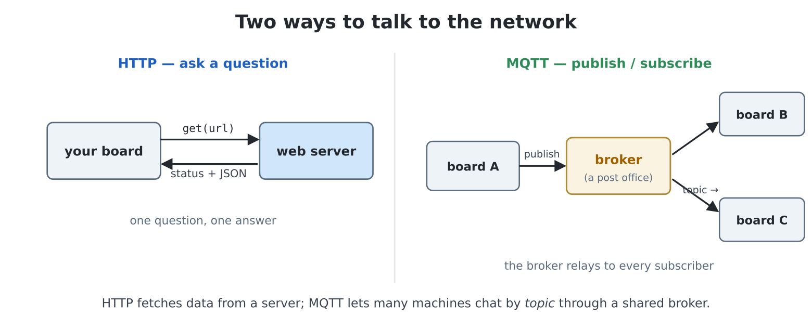

The wireless chip has sat quietly since chapter 1, blinking its LED. Time to use it: this chapter connects the machine to your network and then to the planet — setting its clock from atomic time, asking a weather service about your sky, and whispering to other machines over MQTT. One theme runs through it all, so let it be said first: networks fail, constantly and normally — out of range, router rebooting, server napping — and the difference between a networked gadget and a networked nuisance is chapter 13 applied without mercy. Every listing here treats failure as routine — something to expect and handle quietly, never a surprise that stops the program.
The board helper does the ceremony and remembers:
# connect, and save the credentials
wifi("MyNetwork", "MyPassword")From then on, plain wifi() reconnects with the saved
details — after a reboot, in a program, anywhere. One honest note, worth
repeating in a book for households: the saved password is
scrambled and tied to this board — not readable at a
glance in /settings.json, and useless if the file is copied
to another machine. But that is obfuscation, not real security: the
board can unscramble its own password, so anyone holding the board can
too. There is no secure vault on hardware like this. If a network’s
password must not be kept at all, connect without saving it:
wifi("MyNetwork", "MyPassword", save=False)Pico Computer 3 specific.
wifi(),tz(),ntpsync()andauto()are this machine’s convenience layer over the radio and clock. Underneath sits MicroPython’s standardnetworkmodule (wlan = network.WLAN(...)and friends) for the day you need signal strength or a static address, andntptimefor the clock — the manual points the way.tz()in particular is just a saved hour offset that this machine applies for you; core MicroPython has no timezone support at all. A Colour Maximite 2 has all of this with its Wi-Fi module, onceOPTION WIFIis set at the MMBasic prompt (Appendix K).
With Wi-Fi up, one more door opens: the mip installer
from chapter 11 can now reach the internet, so
import mip; mip.install("...") will pull libraries onto
/lib. Getting online is also what puts the whole
MicroPython library ecosystem within reach.
Chapter 29 left you setting the clock by hand. Never again:
# your offset from UTC, in hours (fractions allowed)
tz(1)
# fetch the time, apply tz, set system clock AND DS3231
ntpsync()
auto(True) # ...and do that automatically at every bootntpsync() asks an internet time server (the same
infrastructure your phone trusts) and writes local time into
the battery-backed DS3231 — so the machine is correct even offline
afterwards, and with auto(True) the bedside clock of
chapter 29 becomes an appliance that is simply never wrong.
(auto falls back silently to the DS3231 when the network is
away — an everyday case, quietly handled.)
A web request is a plain transaction: send a URL, receive text. The
frozen requests module does it, HTTPS included:
import requests
# GitHub turns away a request that does not say who is asking
r = requests.get("https://api.github.com",
headers={"User-Agent": "pc3"})
print(r.status_code) # 200 means "here you are"
print(r.text[:120]) # the reply is text...
# ALWAYS -- replies hold real memory
r.close()Three habits, stated once and kept forever. Check
status_code — 200 is success; 404 and friends are
the server declining, politely. Close every reply — on
a machine with megabytes rather than gigabytes, a forgotten
r.close() is how long-running programs die young (the
try/finally in the project below is the professional form).
And wrap the whole call in
try/except OSError — between you and any server
lies a router, a landlord’s wall and an ocean of weather;
OSError is all of them speaking at once.
Ask a modern service a question and the answer comes as
JSON — and here is the chapter’s best news: JSON is
just dictionaries and lists wearing quotes.
r.json() parses it straight into chapter 10:
r = requests.get("https://api.open-meteo.com/v1/forecast"
"?latitude=51.5&longitude=-0.13"
"¤t_weather=true")
data = r.json()
r.close()
print(data["current_weather"]["temperature"])That reply, on the wire, is text like
{"current_weather": {"temperature": 21.4, "windspeed": 14.0, ...}}
— and after r.json() it is a dict holding a dict, navigated
exactly as you have navigated all of Part II’s data. Spelunking an
unfamiliar API is print(data) and chapter 10 reflexes; no
new skill required.
A live instrument for the shelf: your sky, updated every ten minutes,
degrading gracefully when the internet sulks. The service is Open-Meteo
— free, no sign-up, no key — and the design point is the
last-good-data pattern: a failed refresh never blanks
the panel; it keeps yesterday’s truth and says so.
edit("weather.py"):
import time
import keyboard
import requests
def held(code):
for i in range(1, keydown(0) + 1):
if keydown(i) == code:
return True
return False
# London -- point it at YOUR sky
LAT, LON = 51.5, -0.13
URL = ("https://api.open-meteo.com/v1/forecast"
"?latitude=" + str(LAT) +
"&longitude=" + str(LON) + "¤t_weather=true")
REFRESH_MS = 10 * 60 * 1000
SKIES = {0: "clear sky", 1: "mostly clear", 2: "partly cloudy",
3: "overcast", 45: "fog", 51: "drizzle", 61: "light "
"rain",
63: "rain", 65: "heavy rain", 71: "snow", 80: "showers",
95: "thunderstorm"}
def fetch():
"""The current weather dict, or None. Never raises, always
closes."""
try:
r = requests.get(URL)
except OSError:
return None
try:
if r.status_code != 200:
return None
return r.json()["current_weather"]
except (OSError, ValueError, KeyError):
return None
finally:
r.close()
screen(hdmi.RGB640)
time.sleep(3)
W = hdmi.width()
H = hdmi.height()
d = hdmi.fb()
BG = d.colour(0x0A1420)
INK = d.colour(WHITE)
BIG = d.colour(GOLD)
DIM = d.colour(GRAY)
wx = None # the last GOOD reading
stamp = "" # when we got it
failures = 0
def redraw():
d.fill(BG)
hdmi.text(f"WEATHER {LAT}, {LON}", 16, 12, DIM)
if wx is None:
hdmi.text("asking the sky...", 200, 220, INK, -1, 1, 3)
else:
t = f"{wx['temperature']:.0f}"
# 72x96 digits
x = hdmi.text(t, 60, 120, BIG, -1, 3, 5)
# the degree ring
d.ellipse(x + 18, 132, 10, 10, BIG)
sky = SKIES.get(wx["weathercode"], "sky doing something")
hdmi.text(sky, 60, 260, INK, -1, 1, 3)
hdmi.text(f"wind {wx['windspeed']:.0f} km/h", 60, 300,
INK)
status = "updated " + stamp
if failures:
status += (f" -- offline, showing last good "
f"(x{failures})")
hdmi.text(status, 16, H - 24, DIM)
hdmi.text("R refresh ESC quit", W - 176, 12, DIM)
try:
wifi() # saved credentials, if any
# none saved? the fetch loop copes
except Exception:
pass
console("none")
last_try = None
r_was = True
try:
redraw()
while not held(keyboard.ESC):
now = time.ticks_ms()
r_now = held(ord("r"))
force = r_now and not r_was
r_was = r_now
if force or last_try is None or \
time.ticks_diff(now, last_try) >= REFRESH_MS:
last_try = now
fresh = fetch()
if fresh is not None:
wx = fresh
stamp = "{:02}:{:02}".format(*gettime()[3:5])
failures = 0
else:
failures += 1
redraw()
time.sleep_ms(100)
finally:
console()Prop it on the shelf. Then read fetch() again, because
that one function is the chapter: never raises, always closes —
the network try around .get(), the parsing
try around the rest (a half-received reply can be broken
JSON; a changed API can drop a key — ValueError and
KeyError are both to be expected here too), and the
finally: r.close() that runs whatever happened. The main
loop consequently never needs to know why a refresh failed —
None means “keep the old truth, count it, say so on
screen.” Graceful degradation is a design stance, and the status line is
its honest face. (The R key rides chapter 25’s just-pressed pattern; the
refresh timer is chapter 29’s poll-loop clock.)
HTTP asks; MQTT chats. A broker (a post-office
machine) relays short messages between anyone subscribed to a
topic — the protocol under a million home-automation gadgets,
and the natural way for two Pico Computers to talk. The frozen
umqtt.simple speaks it:

# mqtt_hello.py -- say hello on a public test broker.
# (Public brokers are for hellos, never for anything private!)
import time
from umqtt.simple import MQTTClient
wifi()
# every client needs a UNIQUE name
ME = "pc3-ada"
c = MQTTClient(ME, "test.mosquitto.org")
c.connect()
def on_msg(topic, msg):
print("heard:", msg.decode())
c.set_callback(on_msg)
c.subscribe(b"pc3/book/chat")
c.publish(b"pc3/book/chat", b"hello from " + ME)
for _ in range(300): # listen for ~30 seconds
c.check_msg() # deliver anything that arrived
time.sleep_ms(100)
c.disconnect()
print("done listening")Run it on two machines (or persuade a friend with this book — the
topic is shared by every reader on Earth, which is rather the point) and
each hears the other’s hello. Two novelties earn their footnotes: topics
and messages are bytes — the b"..."
literals — because networks move bytes, not text; .decode()
turns received bytes back into a string (and .encode() goes
the other way). And check_msg() is chapter 21’s
polling philosophy on a network socket: your loop stays in
charge, messages are delivered when you ask.
Coming from MMBasic: on the WebMite this territory is the
WEBcommands —WEB NTPisntpsync(),WEB GETisrequests.get,WEB MQTTisumqtt— with JSON now landing as live dictionaries rather than strings to dissect.
r = requests.get(URL) at the prompt,
data = r.json(), and explore data with chapter
10 moves (data.keys(),
data["current_weather"]…). Every API you ever meet yields
to this.OSError path), then
watch the panel’s offline counter climb — and recover by itself when the
network returns.auto(True), then power-cycle and watch the boot: the
clock sets itself. Now tz(5.5) — half-hour timezones exist,
and the manual said fractions work; verify it.ticks_diff around
requests.get to three different servers. The internet has
geography — measure it from your shelf.listbox. (Open-Meteo takes any coordinates — a
dict of city: (lat, lon) and you’ve built a travel
gadget.)date,temp,code to
/sd/weather.csv — and after a week, plot()
your own climate record (chapter 8’s plotter, at last fed real data).
This is a data logger, and laboratories pay money for
worse.pc3/<yourname>/led and obey b"on" /
b"off" with Pin("LED") — then send those
messages from a phone MQTT app. You have built home automation; the
distance between this and a commercial smart plug is a plastic
case.mqtt_hello’s pattern, each publishing keystrokes and
printing arrivals — a teletype between houses. Add chapter 20 sounds for
arrival and chapter 27 for a send box, and grandparents become reachable
by Pico Computer.